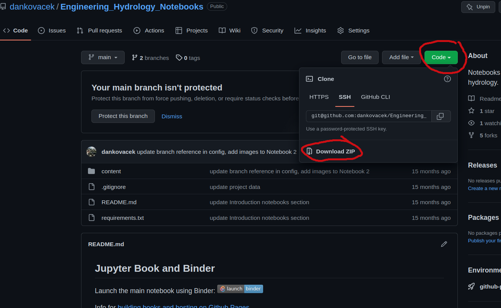

Example: Data Import, Review, and Workflow
Contents
Example: Data Import, Review, and Workflow#
Introduction#
Data quality review is an unavoidable and critical step in any analysis. It is more often the case that you will analyze data collected by someone else, or we will use data from many different sources. In this course, we’ll work with water level and flow data collected by Water Survey of Canada (WSC) and other sources. In engineering practice, it is the responsibility of the practitioner to review any data used as the basis for design or decision making. Datasets from open repsitories are often accompanied by a disclaimer, see the WSC disclaimer for example.
As datasets grow, it becomes necessary to use programmatic approaches to data review. This notebook provides an introduction to opening and reviewing the content of files programmatically. In this example, we import a csv (comma-separated-value) file from a measurement device commonly used in hydrologic practice. There is a limit to the size of dataset we can manually review for anomalies.
When starting out learning to code in Python, there are a few simple tasks that may seem unneccessarily complex. Importing data is one such task, where in Excel we click on a file to open it and most of the time the program already knows whether a cell contains a number or text, for example. In Python we don’t have to declare the type of data we’re working with, but the example below demonstrates a common data import problem and how to work through it.
Note: the
#symbol used extensively below is used for adding comments that are useful to convey information to someone else reviewing or using your code. The Python interpreter ignores all lines starting with#.
What in all the heck does this have to do with hydrology??#
Time invested in learning basics of the tools will save many hours of frustration that can then be reinvested as time spent exploring and testing hydrologic concepts using observational data. Automating file handling enables a powerful set of tools for investigation.
# import libraries
# --> libraries are collections of functions developed by communities of
# open source software developers that typically focus on solving very specific problems
# pandas is a library that manipulates "dataframes", table-like structures,
# to efficiently run operations on large datasets
import pandas as pd
# numpy is a fundamental library for scientific computing
# based on the representation of data as arrays
import numpy as np
# matplotlib is a plotting library
from matplotlib import pyplot as plt
File Path#
A basic but fundamental concept is to understand how to read a file that’s saved anywhere on your computer’s file system, or on a different computer like one in a network or an open data repository. In modern operating systems like Windows and macOS, most of the time we just click on a file, and the correct program launches and opens the file. In programming languages, it goes in the opposite direction—we have to be explicit about where a file resides on disk in order to open it. It is important to understand that Jupyter notebooks interpret file paths relative to where the notebook file is saved.
The notebook file I’m using in this demonstration is labeled Data_Import_and_Review.ipynb, and it’s saved under <something>/Engineering_Hydrology_Notebooks/content/notebooks/Introduction/Data_Import_and_Review.ipynb, where <something> is the file path where you saved and unpacked the archive (zip) file.
Download the project data file#
To begin, download the code repository from GitHub by following the link to https://github.com/dankovacek/Engineering_Hydrology_Notebooks, clicking the green ‘code’ button and downloading a zip file of the code repository, as shown below:

On most systems, the file will go to a Downloads/ folder by default. Save (or move) the file (and unzip) somewhere deliberate on your computer, like in your Documents folder. Mine is saved to /home/Documents/Engineering_Hydrology_Notebooks. This folder will be referred to as the project root.
File Structure#
At the project root level, the structure is roughly as follows:
/home/Documents/Engineering_Hydrology_Notebooks
│ README.md
│ requirements.txt
│
└───content
│ │ config.yml
│ │ intro.md
│ │ markdown.md
│ │ _toc.yml
│ │
│ └───_build
│ │ ...
│ │
│ └───img
│ │ ...
│ │
│ └───notebook_data
│ │ ...
│ │
│ └───notebooks
| │ └───Introduction <--This is the location of Data_Import_and_Review.ipynb
| │ └───Notebook_1
| │ └───...
│ │
│ └───project_data <--This is the location of the data that will be used for the term project
│ │ ...
│ │
At the bottom of the file structure, there is a folder called project_data that contains a number of csv files you will be using for your term project. Let’s try opening Hidden_Creek_stage_data.csv.
Read a csv file#
If I want to open a data file (let’s call it data.csv) from within this notebook, I could simply save it to the same folder as this notebook file. We could then read the csv file using pandas using simply the filename:
df = pd.read_csv('data.csv')
Note: above we call the function
read_csvfrom the pandas library using the short formpd. The file path is simplydata.csvin this case, and note that it must be a string, i.e. surrounded by ‘single quotes’ or “double quotes”, either is fine.
In many cases, we want to keep our data organized and avoid creating duplicates, so we will often keep data elsewhere. If the file is saved elsewhere, there are a couple of ways we can specify its location. Next, we’ll walk through an example of reading a csv data file from the project data, which is saved in a file called Hidden_Creek_stage_data.csv.
If we try to open this file using just the filename, the Jupyter interface will look for a file with that name at the project root level, but it won’t find it.
Instead, you’ll see an error like:
FileNotFoundError Traceback (most recent call last)
<ipython-input-5-b872b6bb0ac8> in <module>
3 # in this case is located in the
4 # Open the folder and navigate to where
----> 5 df = pd.read_csv('Hidden_Creek_stage_data.csv')
data = pd.read_csv('Hidden_Creek_stage_data.csv')
---------------------------------------------------------------------------
FileNotFoundError Traceback (most recent call last)
Cell In [2], line 1
----> 1 data = pd.read_csv('Hidden_Creek_stage_data.csv')
File ~/Documents/code/data_analysis/lib/python3.10/site-packages/pandas/util/_decorators.py:211, in deprecate_kwarg.<locals>._deprecate_kwarg.<locals>.wrapper(*args, **kwargs)
209 else:
210 kwargs[new_arg_name] = new_arg_value
--> 211 return func(*args, **kwargs)
File ~/Documents/code/data_analysis/lib/python3.10/site-packages/pandas/util/_decorators.py:317, in deprecate_nonkeyword_arguments.<locals>.decorate.<locals>.wrapper(*args, **kwargs)
311 if len(args) > num_allow_args:
312 warnings.warn(
313 msg.format(arguments=arguments),
314 FutureWarning,
315 stacklevel=find_stack_level(inspect.currentframe()),
316 )
--> 317 return func(*args, **kwargs)
File ~/Documents/code/data_analysis/lib/python3.10/site-packages/pandas/io/parsers/readers.py:950, in read_csv(filepath_or_buffer, sep, delimiter, header, names, index_col, usecols, squeeze, prefix, mangle_dupe_cols, dtype, engine, converters, true_values, false_values, skipinitialspace, skiprows, skipfooter, nrows, na_values, keep_default_na, na_filter, verbose, skip_blank_lines, parse_dates, infer_datetime_format, keep_date_col, date_parser, dayfirst, cache_dates, iterator, chunksize, compression, thousands, decimal, lineterminator, quotechar, quoting, doublequote, escapechar, comment, encoding, encoding_errors, dialect, error_bad_lines, warn_bad_lines, on_bad_lines, delim_whitespace, low_memory, memory_map, float_precision, storage_options)
935 kwds_defaults = _refine_defaults_read(
936 dialect,
937 delimiter,
(...)
946 defaults={"delimiter": ","},
947 )
948 kwds.update(kwds_defaults)
--> 950 return _read(filepath_or_buffer, kwds)
File ~/Documents/code/data_analysis/lib/python3.10/site-packages/pandas/io/parsers/readers.py:605, in _read(filepath_or_buffer, kwds)
602 _validate_names(kwds.get("names", None))
604 # Create the parser.
--> 605 parser = TextFileReader(filepath_or_buffer, **kwds)
607 if chunksize or iterator:
608 return parser
File ~/Documents/code/data_analysis/lib/python3.10/site-packages/pandas/io/parsers/readers.py:1442, in TextFileReader.__init__(self, f, engine, **kwds)
1439 self.options["has_index_names"] = kwds["has_index_names"]
1441 self.handles: IOHandles | None = None
-> 1442 self._engine = self._make_engine(f, self.engine)
File ~/Documents/code/data_analysis/lib/python3.10/site-packages/pandas/io/parsers/readers.py:1729, in TextFileReader._make_engine(self, f, engine)
1727 is_text = False
1728 mode = "rb"
-> 1729 self.handles = get_handle(
1730 f,
1731 mode,
1732 encoding=self.options.get("encoding", None),
1733 compression=self.options.get("compression", None),
1734 memory_map=self.options.get("memory_map", False),
1735 is_text=is_text,
1736 errors=self.options.get("encoding_errors", "strict"),
1737 storage_options=self.options.get("storage_options", None),
1738 )
1739 assert self.handles is not None
1740 f = self.handles.handle
File ~/Documents/code/data_analysis/lib/python3.10/site-packages/pandas/io/common.py:857, in get_handle(path_or_buf, mode, encoding, compression, memory_map, is_text, errors, storage_options)
852 elif isinstance(handle, str):
853 # Check whether the filename is to be opened in binary mode.
854 # Binary mode does not support 'encoding' and 'newline'.
855 if ioargs.encoding and "b" not in ioargs.mode:
856 # Encoding
--> 857 handle = open(
858 handle,
859 ioargs.mode,
860 encoding=ioargs.encoding,
861 errors=errors,
862 newline="",
863 )
864 else:
865 # Binary mode
866 handle = open(handle, ioargs.mode)
FileNotFoundError: [Errno 2] No such file or directory: 'Hidden_Creek_stage_data.csv'
This error occurs because we told the interpreter that the file lives at the level of the project root. Recall this notebook file is saved in the folder at /home/Documents/Engineering_Hydrology_Notebooks/content/notebooks/Introduction/. Let’s check the file path of the working directory:
# first, import the "operating system" function library
import os
#store the curent working directory path as a string
working_directory = os.getcwd()
# show the current path
working_directory
Note: if the last line of a code block is just a variable, the interpreter will print the variable. If you want to print something that isn’t the last line of code in a block, you need to use a
print(...)function, i.e.print(working_directory).
Above, we have saved the current working directory to a variable called working_directory. We can use this variable to list the contents of the directory with the listdir() function from the os library to list directory contents. Let’s do this for the current working directory.
os.listdir(working_directory)
Here we can see that there are no .csv files in the current working directory. That’s because the project data is saved at /home/Documents/Engineering_Hydrology_Notebooks/content/project_data.
Alternative ways to specify a file path#
Let’s open the stage (water level) data file (Hidden_Creek_stage_data.csv) from the project_data/ directory.
Simply use the full filepath to read the file. Mine is:
/home/Documents/Engineering_Hydrology_Notebooks/content/project_data/Hidden_Creek_stage_data.csv
Let’s try this (update the string below to the correct path):
# note, here you need to replace "somewhere" with the rest of your filepath as described above
data_path = '<somewhere>/Engineering_Hydrology_Notebooks/content/project_data/Hidden_Creek_stage_data.csv'
# data = pd.read_csv(data_path)
# data
Alternatively, we can navigate from the location of this notebook file (the “current working directory”) to the data file. The Pandas
read_csv('<filepath>')function reads (../) in the filepath to mean “go up one level” from the working directory. Looking at the file structure outlined above, or simply opening the project root folder (Engineering_Hydrology_Notebooks/), we can see that theproject_data/folder is two levels up from the current working directory. We can use this feature to create a relative path from the current working directory.
Let’s look at how this works using the listdir function.
os.listdir('../')
os.listdir('../../')
Above, we can now see the project_data/ folder. Let’s list its contents:
os.listdir('../../project_data')
This folder contains Hidden_Creek_stage_data.csv, so we can construct the filepath for our data. Here I’m going to store the path as a variable and call it HC_data_path:
data_folder = '../../project_data/'
HC_data_path = data_folder + 'Hidden_Creek_stage_data.csv'
# alternatively, I could use the os.path.join() function to create the path, i.e.
# HC_data_path = os.path.join(data_folder, 'Hidden_Creek_stage_data.csv')
pd.read_csv(HC_data_path)
The
../shortcut works in Jupyter and with Pandas, but it doesn’t work in all situations. A more robust way to “look up one level” is to use theos.dirname()function to get the name of the parent directory of the current working directory.
Recall os.getcwd() gets the current working directory.
parent_dir = os.path.dirname(os.getcwd())
parent_dir
os.listdir(parent_dir)
Listing the results shows the same folders as we saw above using ../.
gparent_dir = os.path.dirname(parent_dir)
gparent_dir
os.listdir(gparent_dir)
We’ve found the project_data folder a different way.
We can create intermediate variables as short forms for accessing different folders, or we can chain the os.path.dirname() function to move up an arbitrary number of levels. i.e.:
data_dir = os.path.join(os.path.dirname(os.path.dirname(os.getcwd())), 'project_data')
data_dir
os.listdir(data_dir)
According to the Don’t Repeat Yourself principle, it’s a good idea to use variables to store file and folder paths to avoid writing or declaring things twice (more typing = more chance of introducing a typo). I generally specify important paths the very beginning of a work file, and I use variable names that are easy to understand, i.e. data_folder = <some path to data>
Note: It is good practice to use variable names that are easy to understand. For example, if you are storing a number you’ve calculated that represents average annual flow, consider the difference between
qaandavg_annual_flow_m3s. The former might make sense in one moment, but not to someone else or to yourself a year later. The latter is much clearer, and it also contains a sort of encoding of the units (m3s is easy to interpret as \(\frac{m^3}{s}\), or cms = “cubic metres per second”) — units are important!!
This is taking forever, open a file already!!#
Taking what we learned above, lets create a variable to store the filepath for the Hidden Creek stage data.
HC_stage_data_path = os.path.join(data_dir, 'Hidden_Creek_stage_data.csv')
df = pd.read_csv(HC_stage_data_path)
# the "head()" function prints just the first five rows.
# You can specify how many rows to show by entering an integer in the function, i.e. df.head(10) up to 50 rows
df.head()
The dataframe object (we’ve saved it as df) also has a handy function describe() that displays some basic summary statistics.
df.describe(include='all')
Looking at the stats of the above dataframe, it appears as though the ‘Value’ column has non-numeric values (NaN = Not a Number). We can tell this by trying to perform a calculation on the column. If calculating the mean doesn’t work, there could be a few explanations.
df['Value'].mean()
We can see the mean calculation throws a big, ugly error:
ValueError: could not convert ... to numeric:
When you import a csv with pandas, it will try to figure out the type of each column. If pandas can’t figure it out, it will leave the values as strings. In this case, and this is very common when working with files coming from different places (other software, hardware systems, etc.), some values which are non-numeric are included somewhere in the file. We don’t want to go through a big csv and manually change the files, because what if we have to deal with hundreds of files, or millions of rows? You may have come across similar issues in Excel.
Accessing data in the dataframe#
We have the data stored in a variable called df, but it’s not immediately obvious how to work with it. The Pandas library is incredibly powerful for filtering, slicing, and indexing data in many ways. Our dataframe is a table with named columns. We can list the column header names by calling the .columns attribute of the dataframe:
df.columns
We can access any combination of columns, run operations on single rows or the entire table. We can retrieve the Value column by indexing it like so df['Value'] which returns an array of all the values (like a vector).
Note: When you reference a dataframe column, it must match the string exactly. Try to use short, intuitive names and avoid using spaces. Sometimes when importing data from a device or from an open data source, spaces may be introduced into the header names which can raise confusing errors. i.e.
' Value'does not equal'Value'
'Value' == ' Value'
Let’s look at the Value column that threw an error above:
df['Value']
Calling the Value column returns an array of numbers, but above there was an error trying to calculate the mean.
We can verify the type of values in the column by calling the built-in type function. Below we look at the first value in the array using an integer index, in this case the first value in the array df['Value'] is accessed using square brackets, i.e. df['Value'][0]. If we wanted the 18th value, it would be df['Value'][17] because like many programming languages, In Python, indexing starts at 0 instead of 1. More than you ever wanted to know about the history of 0 vs. 1 indexing in computer science can be found here.
type(df['Value'][0])
The data type of the elements of the Value column are string (‘str’) because of some unfortunate but common characteristic of the infinite variety of data source formats. A large part of data analysis is identifying and fixing these types of issues!
Converting data types#
We are working with numeric data that we want to perform calculations on, so the data type needs to be some numeric type (other types are boolean, string, sequence, mappings, classes, etc). In most cases, we use float, short for floating point numbers. The other numeric type is int or integer (i.e. 1, 2, 3).
We can change the type of values in a few ways. Let’s try using the .astype() function from pandas, and then check the data type. Let’s also create a more informative variable name (variable and unit information should be specified somewhere, here let’s assume it’s stage (water level), expressed in metres.)
print(type(df['Value'][0]))
df['stage_m'] = df['Value'].astype(float)
print(type(df['stage_m'][0]))
We can see the type is now (64 bit) floating point.
Floating point is the term used to describe the way computers represent fractions. From the Python documentation, the number 0.125 is represented as \(\frac{1}{10}+\frac{2}{100}+\frac{5}{1000}\). Most numbers can’t be perfectly represented this way because we don’t have infinite memory (think of pi, or the fraction 1/3, for example).
Let’s try calculating a mean again.
df['stage_m'].mean()
Visualizing the data and some first steps for validation#
Now if we plot the data as a time series, we can see there are a few gaps in the data.
df.plot('Date', 'stage_m')
We can isolate the missing periods by filtering for all rows where the value is NaN, which stands for not a number.
gaps = df[df['stage_m'].isnull()]
gaps
If we know we’ll be dealing with more files from this source in the future, we could begin by addressing it at the source (change how values are recorded and saved).
print(len(gaps))
The len function tells us how many rows there are in a dataframe, in this case the dataframe we created by filtering for all non-numeric values (NaN) in the original dataset.
We can also check the mean of all columns at once:
df.mean()
The mean function will skip over the non-numeric values and not include them in the calculation of summary statistics.
This may seem like a lot of work for not much value, the ability to quickly review data programmatically is especially important as datasets grow in size. You can’t visually scroll through 1 million rows in a text file or spreadsheet!